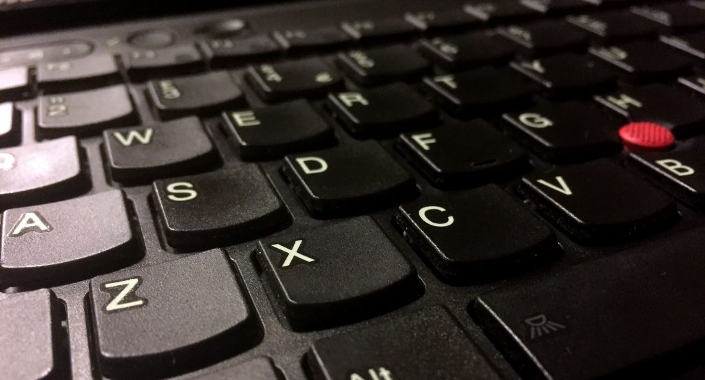
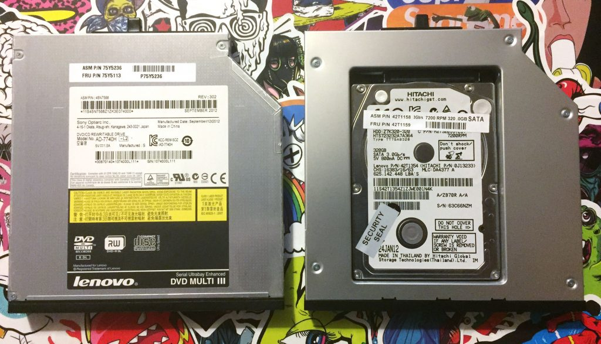

I've been fortunate enough to be supplied with MacBook Pros for my last few jobs, including my current role. I passed my own (now aged) MacBook Air on to my Wife when we met and since then I've been pretty much using my work machines for personal stuff too.
I was thinking about buying a cheap, reliable laptop for web browsing, coding and other odds and ends. Unfortunately the requirement that it should be cheap pretty much disqualified all Apple products. So I thought I'd look through eBay and see what I could find.
In the end I settled on a Lenovo ThinkPad T430 (circa 2012). I chose it because it was available under £250, had a reasonable spec, solid build quality and a very, very nice keyboard. The model I bought was an i7 2.90Ghz with 8GB of RAM, NVIDIA NVS 5400M graphics, a 500GB HDD, DVD-CDRW and a 1600 x 900 antiglare display.

The first modification I made was replacing the optical drive with a HDD caddy and relocating the original HDD there. I then installed the cheapest 240GB SSD I could find as the boot drive.

Next up I installed Windows 10 Pro and dual booted it with Linux Mint. I followed an online guide to setup a development environment in Windows, although I expect the Windows partition will mostly be used for coding C# in Visual Studio. I set up the Linux partition as I've never experimented with Linux before and this seemed like a good opportunity.
The trackpad was showing its age and had that weird spotty texture that only seems to exist on ThinkPads. It turns out the entire surface is just a sticker. So I peeled it off and replaced it with a smooth trackpad surface made to fit the T430.

So now I had a machine that ran the OSes I was interested in playing with, held a good charge, had a usable trackpad, a secondary drive for storage and booted up quickly thanks to the SSD. The one remaining and somewhat unexpected issue was the screen. The antiglare TN panel fitted to the T430 is one of the worst displays I have ever seen. It had to go.
A bit of research later and it seems that I was by no means alone in my assessment of the display. Several other users had investigated alternative displays. Sadly it seems there are no IPS displays that are a straight swap. The best alternative appears to be the AlienWare M14X R2 glossy display. The first one I ordered from eBay was a bust as they lied in the description and shipped me the same antiglare panel I already had. In the end I found the panel from laptopscreen.com. The difference is night and day, it's still not an IPS display but the viewing angles are significantly better and the image is so much sharper.
All in all I'm pretty impressed with this ex-corporate brick. It boots up almost instantly thanks to the SSD. The fingerprint scanner is a surprisingly handy addition and works flawlessly with Windows Hello. The discreet graphics, although old, have turned out to be surprisingly capable. I've played Darksiders, Tony Hawks HD and Grid 2 at reasonable frame-rates without issues. On the flip-side rendering in blender is pretty lacklustre, the BMW scene renders in 38 minutes. However for under £350 all in it's a pretty competent all-rounder!
The things I wish I'd known before I started
You can use sellotape to remove the HDD if it has lost its tab
If you watch any of the many YouTube videos on changing the HDD in a ThinkPad you'll see how you simply undo one screw, slip off the plastic cover, fish out the tab, give it a tug and you're done. Sadly it turned out that when I tried this my HDD had no tab to tug. I contemplated a few approaches to retrieving the stubborn storage device, needle-nosed pliers, supergluing wire to it, even disassembling most of the laptop to get better access. Eventually I figured I should try using some tape. It was pretty fiddly to thread the tape between the HDD and the edge of the enclosure, and then to get it to stick to the HDD but I managed it on the third try. One gentle tug and the drive was out.
The standard display on the T430 is truly an abomination
If I had realised how bad the screen was I would probably have spent the extra for a newer ThinkPad that came with an IPS display. I genuinely hadn't realised how spoilt I had been by the screens on the Apple laptops I've had over the years.
Replacement screens are harder to find than I anticipated
I bought an allegedly 1600 x 900 glossy screen from eBay. I removed the screen that was in the laptop and then fitted the new one. Only to discover that when I removed the protective film it wasn't a glossy screen at all. It was exactly the same antiglare (matte) screen that I had replaced. After a bit of arguing with the supplier, swapping the screens back over and a trip to the post office I managed to get my money back. I then managed to source a replacement from laptopscreens.com. I suppose scarcity of parts for a 5 year old laptop is to be expected but you need to be careful when buying screens online, there are a lot of misinformed dishonest sellers out there.
Make sure you disconnect the battery before swapping displays
In the interests of full disclosure the machine pictured in this post is not the machine I'm using. It's an i5 model that I did all of the upgrades on. Unfortunately in my excitement to get rid of the awful display that came with the machine I forgot to disconnect the battery. I took the old display out, swapped the new one in and booted it up. The screen showed an image but it was only visible under a very strong light. Some research online led me to believe that I blew a fuse on the motherboard that controls the power to the backlight.
Disassembling the entire machine and a quick continuity test with a multi-meter seemed to confirm my suspicions. I considered my options, a new motherboard would have been around £100, the proper tools to replace a surface mount fuse would have been well over £100 and neither would guarantee a working machine. So I went back on to eBay and bought a second ThinkPad (the i7 mentioned above) and transferred all of the upgrades over to the new machine. I'm hoping I can sell the other one for spares/repairs.